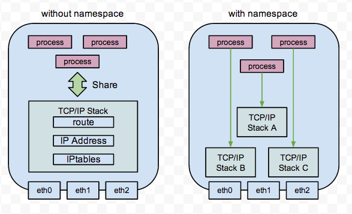
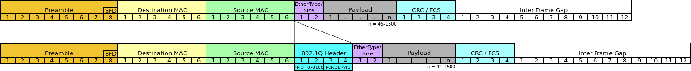
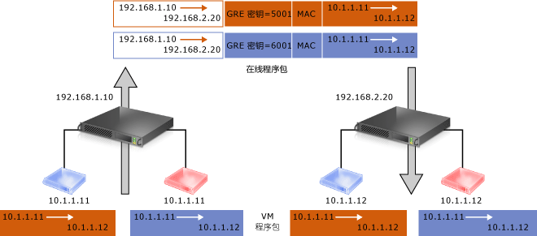
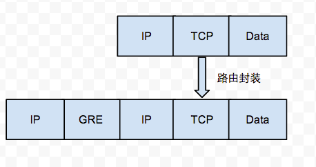
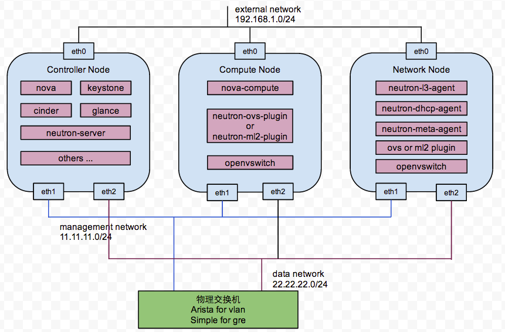
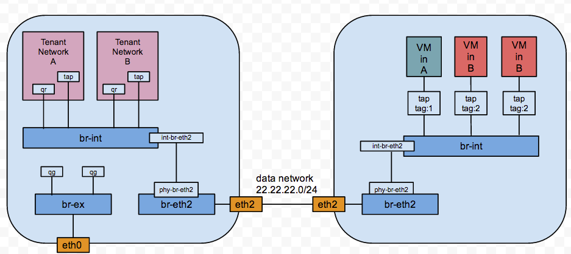
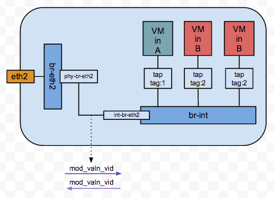
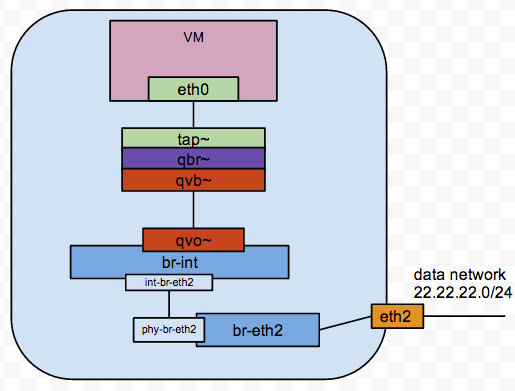
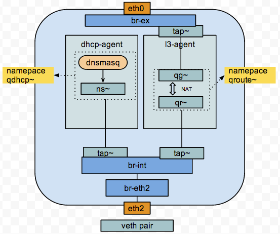

在了解整个SDN机制前，我们需要了解一点基础知识，以便能够深入掌握neutron SDN的实现原理。
Linux Namespaces机制提供一种资源隔离方案。PID,IPC,Network等系统资源不再是全局性的，而是属于特定的Namespace。每个Namespace里面的资源对其他Namespace都是透明的。要创建新的Namespace，只需要在调用clone时指定相应的flag。Linux Namespaces机制为实现基于容器的虚拟化技术提供了很好的基础，LXC（Linux containers）就是利用这一特性实现了资源的隔离。不同container内的进程属于不同的Namespace，彼此透明，互不干扰。
我们看一张图来形象了解下:
IEEE 802.1Q定义一个关于VLAN连接介质访问控制层和IEEE 802.1D生成树协议的具体概念模型。这个模型允许各个独立的VLAN以以太网交换机的数据链路层或路由器互相连接。
以VLAN的架构而言，可以想像一个公司的IT部门希望能够只使用一个实体企业网络端以提供个别独立的逻辑网络端，其他每个部门能够分配到一个独特的VLAN网络。企业网络中的Edge switch用来替所有从设备仪器中送抵各个部门的数据帧(Data frames)，插入适合的VLAN标记。当帧(frames)在网络中被交换时，VLAN标签会在被送回部门底下的设备时被移除。用这种方法资讯在被传到其它部门时就不会外泄或被嗅探。
VLAN的封包格式如下:
如上图所示，vlan header总共32bits，值得注意的是VLAN Identifier一共占据12bits，所以通过VLAN隔离网络支持范围是有限度的，最多只能支持4094(2**12=4096)。
GRE(Generic Routing Encapsulation)通用路由封装，可以使隧道2层的数据包通过3层网络，GRE header中的段ID有20位，大概能支持1600W个网络，目前GRE协议的商用实现是NVGRE。
看下图可以让我们加深理解GRE，每个子网走的是不同的GRE隧道，以此实现网络隔离:
GRE封包方式大致是这样的:
我们部署了两种方案(VLAN & GRE)，但都是controller、compute、network节点分离的架构。
一种是使用纯openvswitch实现的GRE网络，另一种是基于ml2_plugin结合Arista交换机实现的Vlan网络，如下图:
Vlan模式需要在compute-node和network-node上创建一些bridge，如下所示:
#compute node
$ ovs-vsctl show
01eaa6d1-185f-41bd-9282-b1ad512b8351
Bridge "br-eth2"
Port "br-eth2"
Interface "br-eth2"
type: internal
Port "phy-br-eth2"
Interface "phy-br-eth2"
Port "eth2"
Interface "eth2"
Bridge br-int
Port br-int
Interface br-int
type: internal
Port "int-br-eth2"
Interface "int-br-eth2"
Port "tap96e16c40-75"
tag: 1
Interface "tap96e16c40-75"
ovs_version: "1.10.2"
# Network node
$ ovs-vsctl show
0b5063d2-47be-40c3-a7f6-167d01d9a753
Bridge "br-eth2"
Port "br-eth2"
Interface "br-eth2"
type: internal
Port "phy-br-eth2"
Interface "phy-br-eth2"
Port "eth2"
Interface "eth2"
Bridge br-int
Port br-int
Interface br-int
type: internal
Port "int-br-eth2"
Interface "int-br-eth2"
Bridge br-ex
Port br-ex
Interface br-ex
type: internal
Port "eth0"
Interface "eth0"
ovs_version: "1.10.2"
这些网桥的逻辑结构图如下:
compute node上vlan tag的封包操作发生在下面:
veth 从名字上来看是 Virtual ETHernet 的缩写，它的作用很简单，就是要把从一个 network namespace 发出的数据包转发到另一个namespace。通常 veth 会和 bridge 搭配使用，这样一来，从外面进来的包就可以转发到 container 之中了。
network node上vlan tag的封包操作仍然是在phy-br-eth2与int-br-eth2之间进行，封包是交给openvswitch来做的。
那么虚拟机通信是如何通过这些网桥的呢，我们可以看一下compute-node上br-int的dump-flow:
$ ovs-ofctl dump-flows br-int
NXST_FLOW reply (xid=0x4):
cookie=0x0, duration=14.186s, table=0, n_packets=0, n_bytes=0, idle_age=14, priority=3,in_port=1,dl_vlan=1000 actions=mod_vlan_vid:11,NORMAL
$ ovs-ofctl dump-flows br-eth2
NXST_FLOW reply (xid=0x4):
cookie=0x0, duration=427.526s, table=0, n_packets=199, n_bytes=20017, idle_age=401, priority=4,in_port=2,dl_vlan=11 actions=mod_vlan_vid:1000,NORMAL
在看一下下面这张图:
eth0是虚拟机内部看到的网卡，而它的真实映射是宿主机系统中虚拟的tap设备，tap设备通过bridge qbr与veth pair一对设备连接，veth pair的两个设备分别是qvo和qvb，qvo连接在br-int上，我们可以查出连接qvo这个port的tag是11:
Bridge br-int
Port "qvoaacd258a-a1"
tag: 11
Interface "qvoaacd258a-a1"
再结合上面的dump-flow信息，整个流程就应该很清晰了，该租户网络的vlan vid是1001，而虚拟机的虚拟网卡连接在openvswitch上的port tag是11， 所以dump-flow上才会出现tag1000和11的交换信息。
说道这里，我们已经把compute-node通信机制讲解了，那么虚拟机是如何通过network-node上的l3-agent的上网，如何利用dhcp-agent完成二层通信，大致的机制差不多，请看图:
这里的veth pair负责完成不同namespace之间通信的工作，network-node上的NameSpace如下:
$ ip netns list
qrouter-9d28118d-4508-4ac0-9097-7a80bbe1f6ce
qdhcp-a22671e6-639e-4106-b0c3-c53fa9c4ae8e
Network node上openvswitch信息如下:
$ ovs-vsctl show
0b5063d2-47be-40c3-a7f6-167d01d9a753
Bridge "br-eth2"
Port "br-eth2"
Interface "br-eth2"
type: internal
Port "phy-br-eth2"
Interface "phy-br-eth2"
Port "eth2"
Interface "eth2"
Bridge br-int
Port br-int
Interface br-int
type: internal
Port "tap414f8b85-17"
tag: 3
Interface "tap414f8b85-17"
Port "qr-d4c2bdbb-cd"
tag: 3
Interface "qr-d4c2bdbb-cd"
type: internal
Port "int-br-eth2"
Interface "int-br-eth2"
Bridge br-ex
Port "tapd1f0e2c5-46"
Interface "tapd1f0e2c5-46"
Port br-ex
Interface br-ex
type: internal
Port "eth0"
Interface "eth0"
ovs_version: "1.10.2"
dnsmasq是一种dhcp服务器，他负责分配子网ip和二层通信，ns~是命名空间qdhcp*下的device，它和tap414f8b85-17组成一对veth device。
qr~和qg~是命名空间qroute*下的device，他们都是有ip地址的，通过IPtables的NAT规则实现floating ip，qg~和tapd1f0e2c546组成一对veth device，以便能和物理网卡eth0通信，从而实现外网通信。命名空间qroute*的IPtables NAT规则如下:
-A neutron-l3-agent-PREROUTING -d 192.168.1.3/32 -j DNAT --to-destination 40.40.40.3
-A neutron-l3-agent-float-snat -s 40.40.40.3/32 -j SNAT --to-source 192.168.1.3
这样你通过floating ip就可以访问到这台虚拟机了。